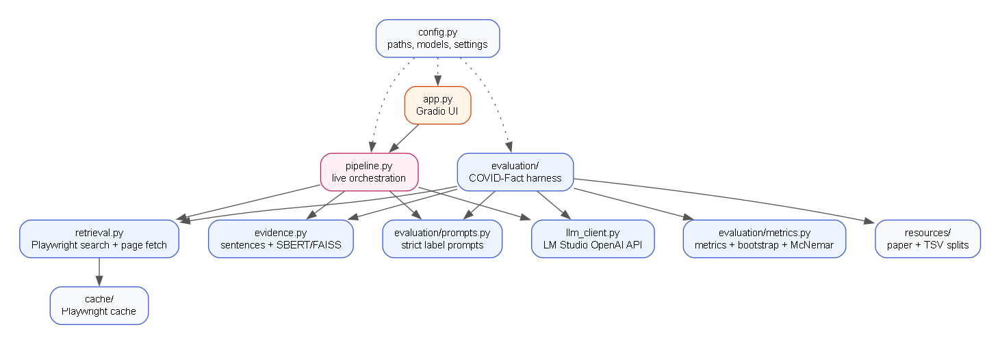

Search
Playwright searches Brave first, then falls back to Google News RSS and Wikipedia when needed.
Factly searches the live web, ranks the strongest evidence, and asks two local models for a verdict. Only SUPPORTED or REFUTED make the cut.
Factly is a research demo. It can be wrong. Open the cited sources before sharing a verdict.
Gold-evidence results on the full 401-claim test split, plus the 60-claim retrieval sample. Macro F1 is the headline metric because the test set is imbalanced.
Every verdict is grounded in retrieved evidence. LM Studio never talks to the open internet directly.
Playwright searches Brave first, then falls back to Google News RSS and Wikipedia when needed.
Top pages are fetched and cleaned with trafilatura. Search snippets are used when a page cannot be read.
SBERT embeds the claim and candidate sentences; FAISS cosine similarity selects the five strongest sentences.
Two local models receive the same evidence and must answer with a strict dataset label.

SUPPORTED maps to COVID-Fact entailment. REFUTED maps to not_entailment. If retrieval finds no usable evidence, Factly says No verdict instead of guessing.
The browser talks only to the FastAPI backend over HTTPS. LM Studio stays on localhost and is never exposed through the tunnel.